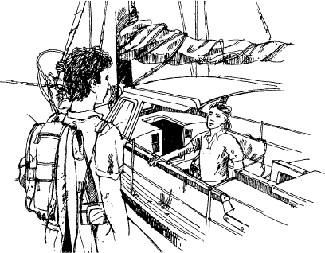

Listen to Part 1:
Tại bến cảng ở Si Racha, có một chiếc thuyền buồm lớn màu trắng tên là The Quest. Một chàng trai trẻ tóc đen đang đứng trên cầu tàu cạnh thuyền. Anh ta nóng và mệt. Anh ta đặt hai chiếc túi lớn của mình xuống.
‘Alo?’ anh ta hét lên. ‘Có ai ở đó không?’
Một người đàn ông bước lên buồng lái của thuyền. Ông ta có đôi mắt xanh và mái tóc vàng dài. Làn da ông ta bị cháy nắng. Ông ta đi đến bên mạn thuyền và mỉm cười.
‘Anh có phải John Morgan không?’ ông ta nói. ‘Chào anh. Tôi là Mark Blackburn. Chào mừng anh lên tàu The Quest.’

John Morgan nhặt túi của mình lên và trèo lên thuyền. Hai người đàn ông bắt tay nhau.
‘Tôi rất vui được gặp anh,’ John nói. ‘Tôi đã đọc những cuốn sách anh viết về những xác tàu đắm cũ.’
‘Chà, có thể tôi có thể chỉ cho anh một số xác tàu đắm thú vị,’ Mark Blackburn nói. ‘Đi nào, tôi sẽ đưa anh đến phòng của anh ngay bây giờ.’
‘Cảm ơn,’ John trả lời.
Mark bước xuống một số bậc thang hẹp. John đi theo ông ta. Khi họ xuống đến dưới cùng, Mark nói, ‘Đây là cabin chính. Đây là nơi tôi làm việc.’
Listen to Part 2:
Trên tường của cabin có rất nhiều bản đồ. Nhiều bản đồ và bản vẽ hơn phủ trên chiếc bàn gỗ lớn. Có những cửa sổ hẹp chạy xung quanh cabin. John nhìn qua cửa sổ và thấy vùng nước xanh của bến cảng Si Racha bên ngoài.
Họ đi qua cabin chính và vào một cabin nhỏ hơn.
‘Đây là cabin của anh. Nó nhỏ nhưng thoải mái,’ Mark nói.
‘Cảm ơn anh,’ John trả lời. Anh ta đặt túi của mình lên giường và họ trở lại cabin chính.
‘Anh đang làm gì ở Si Racha vậy?’ John hỏi.
‘Tôi đã tìm thấy một xác tàu Trung Quốc thế kỷ thứ mười sáu,’ Mark giải thích.
‘Xác tàu đắm ở đâu?’ John hỏi.
‘Nó gần Ko Lan,’ Mark trả lời. ‘Ko Lan là một hòn đảo gần Pattaya. Xác tàu đắm ở đây.’ Ông ta chỉ vào một trong những bản đồ trên tường cabin.
‘Xác tàu đắm khá gần bờ!’ John nói.
‘Đúng vậy, và thật không may, các tàu du lịch cũng đến đó. Có rất nhiều san hô ở phía tây đảo Ko Lan - này, anh thấy không?’ Mark chỉ cho John nơi đó trên bản đồ. ‘San hô rất đẹp, và khách du lịch đến đó lặn để xem san hô và cá. Sau đó, họ lấy đồ từ xác tàu đắm.’
Listen to Part 3:
‘Vậy anh có tìm thấy thứ gì trong xác tàu đắm không?’ John hỏi.
‘Có chứ. Khách du lịch để lại một vài mảnh sứ Trung Quốc - cốc và đĩa,’ Mark cười nói.
‘Sứ Trung Quốc ư? Nghe có vẻ thú vị. Kể cho tôi nghe thêm đi,’ John nói.
‘Hàng trăm năm trước, người Trung Quốc đã giao thương rất nhiều với người Thái,’ Mark giải thích. ‘Họ bán đồ sứ và hàng hóa khác ở Thái Lan và các nước Đông Nam Á khác. Nhiều tàu đắm gần đây. Một ngày nào đó, tôi sẽ tìm thấy một xác tàu đắm trước cả khách du lịch!’
‘Ko Lan có phải là xác tàu đắm lâu đời nhất mà anh tìm thấy không?’ John hỏi.
‘Không, tôi đã tìm thấy những xác tàu đắm lâu đời hơn. Nhưng không có xác tàu nào trong số đó ở Châu Á,’ Mark nói. ‘Tôi thực sự muốn tìm thấy xác tàu của một con tàu Trung Quốc thế kỷ thứ mười ba hoặc mười bốn. Marco Polo đã viết về những con tàu đó.’
‘Marco Polo ư? Nhà thám hiểm người Ý đã đến Trung Quốc vào cuối thế kỷ thứ mười ba?’ John hỏi.
‘Đúng vậy,’ Mark trả lời. ‘Marco Polo đã sống ở Trung Quốc nhiều năm. Ông ấy đã viết về những con tàu khổng lồ của Trung Quốc đi từ Trung Quốc đến Ấn Độ. Chúng rất, rất lớn. Chúng có thủy thủ đoàn gồm 300 người.’ Ông ta mỉm cười với John. ‘Tôi muốn tìm thấy một trong những con tàu này.’
‘Có lẽ anh sẽ may mắn,’ John nói. ‘Vâng, khi nào chúng ta đi đến xác tàu đắm Ko Lan?’
‘Càng sớm càng tốt,’ Mark trả lời. ‘Bây giờ đã quá muộn để đi thuyền, nhưng chúng ta có thể đi thuyền sớm vào ngày mai. Chúng ta không có nhiều thời gian để xem xét xác tàu đắm. Chúng ta chỉ có một hoặc hai tuần trước khi gió mùa bắt đầu. Khi trời bắt đầu mưa, chúng ta sẽ phải dừng làm việc.’
Listen to Part 4:
Hai người đàn ông quay trở lại buồng lái. Một nhóm nhỏ người đàn ông Thái Lan đang đứng gần The Quest. Họ nói chuyện rất hào hứng và chỉ vào con thuyền. Khi họ nhìn thấy Mark và John, họ ngừng nói. Một trong những người đàn ông bước về phía con thuyền. Có một cậu bé theo sau anh ta. Mark mỉm cười với họ.
‘Xin chào. Tôi tên là Mark. Tôi có thể giúp gì cho anh không?’ ông ta hỏi.
‘Tôi tên là Daeng,’ người đàn ông trả lời, ‘và đây là cậu bé lái đò của tôi, Lek. Chúng tôi đã tìm thấy thứ gì đó trên biển. Một cái đĩa. Có lẽ là từ một xác tàu đắm. Anh có biết về những thứ này không?’
‘Có chứ,’ Mark nói. ‘Hãy lên thuyền và cho tôi xem.’
Daeng và Lek trèo lên tàu The Quest. Nhóm người đàn ông trên cầu tàu nhìn theo họ. Daeng đang cầm một thứ gì đó được bọc trong vải. Anh ta đưa cho Mark. Mark nhẹ nhàng lấy nó và mở ra.
Trong một khoảnh khắc, Mark không nói gì. Ông ta nhìn vào cái đĩa. Sau đó, ông ta nhẹ nhàng nói, ‘Sứ Swatow!’
‘Đó là gì?’ Daeng hỏi.
‘Đó là tên của loại sứ Trung Quốc này,’ Mark trả lời. ‘Anh tìm thấy nó như thế nào?’
‘Chúng tôi đang đánh cá. Lưới vướng vào thứ gì đó. Chúng tôi kéo lưới vào. Cái đĩa nằm trong lưới.’
Listen to Part 5:
‘Mark, anh có biết cái đĩa này bao nhiêu tuổi không?’ John hỏi.
Mark lật cái đĩa lại. ‘Vâng, nhìn này!’ ông ta nói. ‘Có một số chữ viết Trung Quốc ở dưới đáy đĩa. Nó có nội dung "Đại Minh Vạn Lịch niên hiệu". Vạn Lịch là Hoàng đế Trung Quốc từ năm 1573 đến 1620. Đó là cuối thế kỷ mười sáu đến đầu thế kỷ mười bảy.’
Mark nhìn Daeng. ‘Cái đĩa này rất cũ. Anh đánh cá chính xác ở đâu?’ ông ta hỏi.
Daeng không trả lời câu hỏi của Mark. Thay vào đó, Daeng trả lời, ‘Anh có thể mua nó.’
‘Tôi không muốn cái đĩa,’ Mark nói. ‘Tôi muốn biết anh đánh cá ở đâu. Có lẽ có nhiều đồ sứ hơn ở đó. Có lẽ có một xác tàu đắm. Hãy chỉ cho tôi nơi anh tìm thấy cái đĩa này. Tôi sẽ trả cho anh 25.000 baht.’
‘Mua cái đĩa,’ Daeng lại nói.
‘Nhưng tôi không thể mua cái đĩa! Và anh không thể bán cái đĩa!’ Mark trả lời. ‘Cái đĩa này không thuộc về anh - nó thuộc về Vương quốc Thái Lan. Anh phải mang cái đĩa đến Bảo tàng Quốc gia ở Bangkok.’
Daeng nhặt cái đĩa lên. Anh ta bắt đầu bỏ đi. Cậu bé im lặng đi theo anh ta.
‘Chờ đã,’ Mark nói. ‘Tôi không thể mua cái đĩa. Không ai có thể mua cái đĩa. Nhưng hãy chỉ cho tôi nơi anh tìm thấy nó đi. Tôi sẽ trả nhiều tiền cho anh. Tôi sẽ trả cho anh 50.000 baht.’
Daeng trả lời chậm rãi. ‘Năm mươi nghìn baht?’
Listen to Part 6:
Mark gật đầu. ‘Vâng,’ ông ta nói.
Daeng suy nghĩ một lúc. ‘Được, 50.000.’
‘Tốt. Chúng ta có thể gặp nhau vào sáng mai không?’
‘Được. Thuyền của tôi ở cùng với những chiếc thuyền đánh cá khác ở đằng kia.’ Daeng chỉ vào một số thuyền đánh cá của Thái Lan không xa The Quest. ‘Anh có nhìn thấy chiếc thuyền màu xanh không? Đó là thuyền của tôi. Chúng tôi sẽ gặp anh ở thuyền của tôi lúc năm giờ ba mươi.’
Mark và John nhìn người đánh cá và cậu bé bỏ đi. Sau đó, John lên tiếng.
‘Đã có ai tìm thấy đồ sứ Swatow ở Vịnh Thái Lan trước đây chưa?’
‘Chưa,’ Mark nói.
‘Vì vậy, có lẽ có một xác tàu đắm mới ở đây. Có lẽ có rất nhiều đồ sứ Trung Quốc bên trong thân tàu,’ John nói.
Mark nhìn anh ta. ‘Có khả năng,’ ông ta nói. ‘Nhưng tại sao người đánh cá đó lại sợ hãi như vậy?’